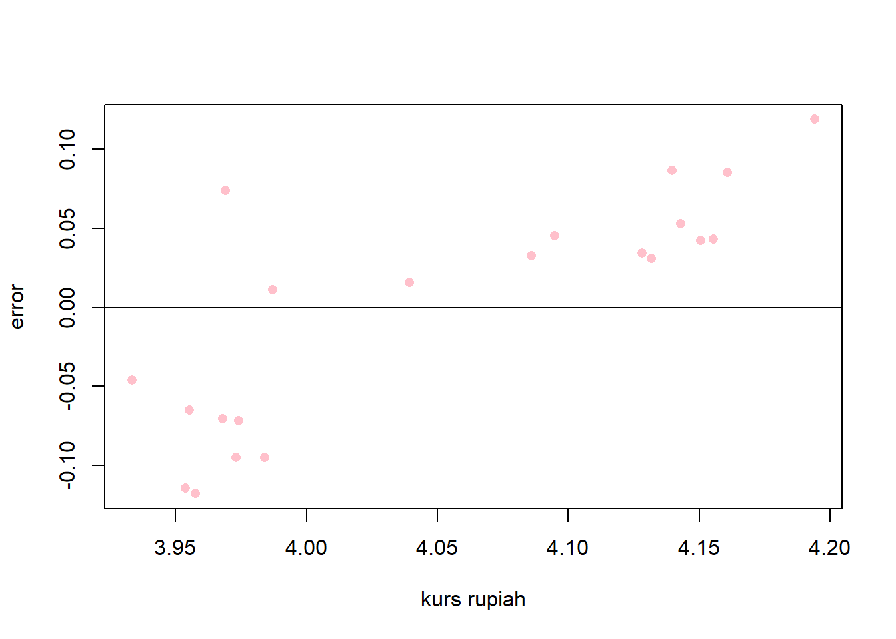

library(tidyverse)
library(readxl)
library(writexl)
library(dplyr)Pengaruh Tingkat Suku Bunga Terhadap Nilai Tukar Rupiah Tahun 2002 Hingga 2022
Metode Penelitian Politeknik APP Jakarta

1 Pendahuluan
1.1 Latar belakang
Nilai tukar rupiah terhadap mata uang asing, khususnya dolar Amerika Serikat (AS), merupakan salah satu variabel makroekonomi yang penting bagi perekonomian Indonesia. Nilai tukar rupiah dapat mempengaruhi daya saing ekspor, impor, inflasi, neraca pembayaran, dan pertumbuhan ekonomi. Nilai tukar rupiah juga dapat dipengaruhi oleh berbagai faktor, baik internal maupun eksternal. Salah satu faktor internal yang berpengaruh adalah tingkat suku bunga.
Tingkat suku bunga adalah harga dari penggunaan uang dalam periode tertentu. Tingkat suku bunga dapat mempengaruhi permintaan dan penawaran uang, serta arus modal antarnegara. Tingkat suku bunga yang ditetapkan oleh Bank Indonesia (BI) sebagai bank sentral Indonesia, dan tingkat suku bunga yang ditetapkan oleh Federal Reserve (The Fed) sebagai bank sentral AS, dapat mempengaruhi nilai tukar rupiah terhadap dolar AS. Secara teoritis, tingkat suku bunga yang lebih tinggi dapat menarik arus modal masuk, sehingga meningkatkan permintaan terhadap mata uang domestik dan menguatkan nilai tukarnya. Sebaliknya, tingkat suku bunga yang lebih rendah dapat mendorong arus modal keluar, sehingga menurunkan permintaan terhadap mata uang domestik dan melemahkan nilai tukarnya.
Penelitian tentang pengaruh tingkat suku bunga terhadap nilai tukar rupiah telah banyak dilakukan oleh para peneliti, baik dengan menggunakan pendekatan teoritis maupun empiris. Namun, hasil penelitian tersebut masih bervariasi dan belum menunjukkan kesimpulan yang konsisten. Hal ini dapat disebabkan oleh perbedaan periode, metode, variabel, dan data yang digunakan dalam penelitian. Oleh karena itu, penelitian ini bertujuan untuk menguji kembali pengaruh tingkat suku bunga terhadap nilai tukar rupiah dengan menggunakan data tahun 2002 hingga 2022. Data tahun 2002 dipilih karena merupakan tahun awal penerapan sistem nilai tukar mengambang bebas di Indonesia. Penelitian ini diharapkan dapat memberikan kontribusi bagi pengembangan ilmu pengetahuan, khususnya di bidang ekonomi internasional, serta memberikan masukan bagi pembuat kebijakan dalam mengelola nilai tukar rupiah.
1.2 Ruang lingkup
Penelitian ini memanfaatkan data sekunder yang didapatkan dari Bank Indonesia, yang mencakup data historis mengenai niali tukar rupiah terhadap dolar Amerika Serikat, dan bunga BI. Penelitian ini mengeksplorasi keterkaitan antara tingkat bunga, yang mempengaruhi kurs rupiah. Penelitian ini menggunakan metode analisis regresi univariat dengan data yang bersifat time series, mencakup periode waktu dari tahun 2002 hingga 2022.
1.3 Rumusan masalah
- Apakah Tingkat suku bunga mempengaruhi nilai tukar rupiah?
- Bagaimana hubungan tingkat suku bunga terhadap nilai tukar rupiah?
1.4 Tujuan dan manfaat penelitian
Tujuan dari penelitian ini adalah untuk meneliti dampak tingkat bunga terhadap kurs rupiah terhadap dolar Amerika dari tahun 2002 sampai 2022. Selain itu penelitian ini memberikan informasi yang dapat digunakan oleh pelaku pasar valas untuk menentukan strategi investasi yang tepat, serta memberikan pemahaman kepada masyarakat umum tentang hubungan antara tingkat suku bunga dan nilai tukar rupiah.
1.5 Package
Package yang digunakan dalam penelitian ini antara lain:
2 Studi pustaka
nilai tukar rupiah
Nilai tukar rupiah (terhadap USD) adalah jumlah rupiah yang dibutuhkan untuk membeli satu dolar AS. Nilai tukar ini berfluktuasi setiap hari, tergantung pada permintaan dan penawaran mata uang di pasar valuta asing. Nilai tukar ini juga dipengaruhi oleh faktor-faktor ekonomi, politik, dan sosial di dalam dan luar negeri.
Salah satu sumber informasi tentang nilai tukar rupiah (terhadap USD) adalah Bank Indonesia, bank sentral Republik Indonesia. Bank Indonesia menetapkan kurs transaksi untuk beberapa mata uang asing, termasuk dolar AS, berdasarkan harga pasar. Kurs transaksi ini digunakan sebagai acuan untuk transaksi valuta asing antara Bank Indonesia dan bank-bank lain di Indonesia.
Selain Bank Indonesia, ada juga sumber informasi lain yang menyediakan nilai tukar rupiah (terhadap USD), seperti Google Finance, Wise, dan media online. Namun, nilai tukar yang ditampilkan oleh sumber-sumber ini mungkin berbeda dari kurs transaksi Bank Indonesia, karena mereka menggunakan data dari berbagai penyedia layanan valuta asing yang mungkin memiliki harga yang berbeda. Oleh karena itu, Anda harus memeriksa nilai tukar dari beberapa sumber sebelum melakukan transaksi valuta asing, agar Anda mendapatkan harga yang terbaik.
Tingkat Suku Bunga
Tingkat suku bunga bank indonesia adalah suku bunga acuan yang ditetapkan oleh Bank Indonesia (BI) sebagai bank sentral Republik Indonesia. Suku bunga ini digunakan sebagai alat untuk mengatur kebijakan moneter, inflasi, dan nilai tukar rupiah. Suku bunga ini juga mempengaruhi suku bunga pasar uang, perbankan, dan sektor riil.
Saat ini, suku bunga acuan yang digunakan oleh BI adalah BI-Rate, yang sebelumnya bernama BI-7 Day Reverse Repo Rate (BI7DRR). BI-Rate adalah suku bunga yang diberlakukan oleh BI untuk transaksi reverse repo dengan tenor 7 hari. Reverse repo adalah transaksi jual beli surat berharga antara BI dan bank lain, di mana BI menjual surat berharga dengan kesepakatan untuk membelinya kembali pada waktu yang ditentukan dengan harga yang lebih tinggi. Dengan demikian, BI dapat mengendalikan jumlah uang beredar di pasar.
3 Metode penelitian
3.1 Data
| Tahun | Suku Bunga (%) | Nilai Tukar (IDR/USD) | y | x | |
|---|---|---|---|---|---|
| 1 | 2002 | 18,25 | 9.311,00 | 3,968996327 | 0,1825 |
| 2 | 2003 | 12,5 | 8.577,00 | 3,93333541 | 0,125 |
| 3 | 2004 | 8,5 | 9.290,00 | 3,968015714 | 0,085 |
| 4 | 2005 | 12,75 | 9.705,00 | 3,98699554 | 0,1275 |
| 5 | 2006 | 9,75 | 9.020,00 | 3,955206538 | 0,0975 |
| 6 | 2007 | 8 | 9.419,00 | 3,974004797 | 0,08 |
| 7 | 2008 | 9,5 | 10.950,00 | 4,039414119 | 0,095 |
| 8 | 2009 | 6,5 | 9.399,00 | 3,97308165 | 0,065 |
| 9 | 2010 | 6,5 | 8.991,00 | 3,953807998 | 0,065 |
| 10 | 2011 | 6 | 9.068,00 | 3,957511511 | 0,06 |
| 11 | 2012 | 5,75 | 9.638,00 | 3,983986922 | 0,0575 |
| 12 | 2013 | 7,5 | 12.189,00 | 4,085968077 | 0,075 |
| 13 | 2014 | 7,75 | 12.440,00 | 4,09482038 | 0,0775 |
| 14 | 2015 | 7,50 | 13.795,00 | 4,139721705 | 0,075 |
| 15 | 2016 | 4,75 | 13.436,00 | 4,128269995 | 0,0475 |
| 16 | 2017 | 4,25 | 13.548,00 | 4,131875188 | 0,0425 |
| 17 | 2018 | 6 | 14.481,00 | 4,160798554 | 0,06 |
| 18 | 2019 | 5 | 13.901,00 | 4,143046043 | 0,05 |
| 19 | 2020 | 3,75 | 14.146,00 | 4,150633654 | 0,0375 |
| 20 | 2021 | 3,5 | 14.305,00 | 4,155487862 | 0,035 |
| 21 | 2022 | 6 | 15.636,80 | 4,194147881 | 0,06 |
pada penelitian ini data bersifat time series dalam kurun waktu tahun 2002 hingga 2022. Penelitian ini menggunakan data objek nilai tukar rupiah dan suku bunga yang didapat dari Statistik Ekonomi dan Keuangan Indonesia (SEKI). Kemudian data diola sedemikian rupa dan menghasilkan variabel x dan variabel y, yang nantinya akan digunakan sebagai objek pada penelitian ini.
#import dataset
library(readxl)
suku<-read_excel('suku.xlsx')
head(suku)# A tibble: 6 × 5
Tahun `Suku Bunga (%)` `Nilai Tukar (IDR/USD)` y x
<dbl> <dbl> <dbl> <dbl> <dbl>
1 2002 18.2 9311 3.97 0.182
2 2003 12.5 8577 3.93 0.125
3 2004 8.5 9290 3.97 0.085
4 2005 12.8 9705 3.99 0.128
5 2006 9.75 9020 3.96 0.0975
6 2007 8 9419 3.97 0.08 library("ggplot2")
library("readxl")
library("dplyr")
ggplot(suku,aes(y
,x
))+
geom_point(color="purple",size=2)+
labs(title="hubungan antara nilai tukar rupiah dan suku bunga ",
x="suku bunga",
y="nilai tukar rupiah",
caption = "sumber: SEKI")+
theme_classic()
3.2 Metode analisis
Peneliti menggunakan metode regresi univariat, dengan teknik analisis berupa kuantitatif deskriptif. Penelitian ini bermaksud untuk mencari hubungan antara tingkat suku bunga dari bank Indonesia dengan nilai tukar rupiah. Dengan spesifikasi sebagai berikut:
\[ y_{t}=\beta_0 + \beta_1 x_t+\mu_t \] di mana \(y_t\) adalah nilai tukar rupiah (kurs rupiah) dan \(x_t\) adalah suku bunga.
4 Pembahasan
4.1 Pembahasan masalah
peneliti menyatukan data yang telah dikumpulkan, selanjutnya melakukan regresi dan menghasilkan data sebagai berikut:
| Coefficients | Estimate | Pr(> |
|---|---|---|
| Intercept | 4.16359 | < 2e-16 |
| x | -1.47265 | 0.00651 |
Hasil dari regresi ditersebut dimasukkan kedalam rumus sehingga menjadi:
\[ y_{t}=\ 4.16359 - \ 1.47265 x_t+\mu_t \]
Suku bunga berpengaruh negatif terhadap kurs rupiah, maka jika diasumsikan suku bunga naik satu akan menyebabkan penurunan atau melemahnya kurs rupiah sebesar 1.47265.
4.2 Analisis masalah
Hasil regresinya adalah
setwd("C:/metodologi/uasnahda")
suku<-read_excel("suku.xlsx")
reg<-lm(y~x,data=suku)
summary(reg)
Call:
lm(formula = y ~ x, data = suku)
Residuals:
Min 1Q Median 3Q Max
-0.11772 -0.07040 0.03087 0.04536 0.11892
Coefficients:
Estimate Std. Error t value Pr(>|t|)
(Intercept) 4.16359 0.04024 103.471 < 2e-16 ***
x -1.47265 0.48202 -3.055 0.00651 **
---
Signif. codes: 0 '***' 0.001 '**' 0.01 '*' 0.05 '.' 0.1 ' ' 1
Residual standard error: 0.07536 on 19 degrees of freedom
Multiple R-squared: 0.3294, Adjusted R-squared: 0.2941
F-statistic: 9.334 on 1 and 19 DF, p-value: 0.006514plot pengaruh error terhadap suku bunga
library(readxl)
suku$m<-resid(reg)
plot(suku$x,suku$m,xlab="suku bunga",ylab="error",col='maroon',pch=16)
abline(h=0)plot pengaruh error terhadap kurs rupiah
library(readxl)
suku$m<-resid(reg)
plot(suku$y,suku$m,xlab="kurs rupiah",ylab="error",col='pink',pch=16)
abline(h=0)
Jika ilihat dari hasil regresi,p-value (0.006514) menunjukkan signifikansi model, nilai ini jauh lebih kecil dari alpha yang berarti model secara keseluruhan signifikan dalam menjelaskan hubungan antara x dan y.
Nilai Multiple R-squared 0.3294, Adjusted R-squared 0.2941, menunjukkan bahwa model dapat menjelaskan sekitar 33% dan 29% variasi dari variabel y. Nilai ini cukup rendah, yang berarti model mungkin tidak memiliki daya prediksi yang baik. Maka peneliti perlu menambahkan variabel lain yang relevan dengan y.
5 Kesimpulan
Suku bunga memiliki pengaruh yang signifikan terhadap kurs rupiah dalam kurun waktu periode tahun 2000 hingga 2022. Namun suku bunga memiliki efek negatif teradap kurs rupia, yang artinya setiap kenaikan dari suku bunga akan melemahkan atau menurunkan kurs rupiah. Namun signifikansi tidak menjamin bahwa regresi memiliki daya prediksi yang baik, pada penelitian ini menunjukkan daya prediksi yang kurang. Peneliti perlu melakukan analisis variabel lain yang tidak teramati seperti inflasi, pertumbuhan ekonomi, dan kebijakan pemerintah.
Ada beberapa situasi di mana kenaikan suku bunga dapat membuat nilai tukar rupiah melemah. Situasi tersebut dapat terjadi apabila Kondisi ekonomi dunia sedang menghadapi krisis atau perlambatan pertumbuhan. Dalam situasi ini, investor dunia cenderung untuk menarik investasi mereka dari seluruh dunia, termasuk dari Indonesia. Selain itu apabila Neraca perdagangan Indonesia mengalami deficit, dalam situasi ini, kebutuhan valuta asing untuk impor akan naik, sehingga membuat nilai tukar rupiah melemah.
6 Referensi
Faoriko, A. (2013). Pengaruh inflasi, suku bunga dan nilai tukar rupiah, terhadap return saham di bursa efek Indonesia. Universitas Negeri Yogyakarta.
Astuti, E. P., & Ardila, R. (2019). Pengaruh Perubahan Tingkat Suku Bunga Bank Indonesia dan Perubahan Nilai Tukar Rupiah pada US Dollar terhadap Harga Saham-Saham LQ45 di Bursa Efek Indonesia. Jurnal Sekuritas, 2(3), 65-82.
Hidayat, A., & Saefullah, E. (2019). Nilai tukar rupiah dan suku bunga bank indonesia terhadap indeks harga saham gabungan Bursa Efek Indonesia periode 2012-2017. Banque Syar’i: Jurnal llmiah Perbankan Syariah, 5(2), 165-182.
Arifin, S., & Mayasya, S. (2018). Faktor-faktor yang mempengaruhi nilai tukar rupiah terhadap dolar amerika serikat. Jurnal Ekonomi-Qu, 8(1).
Ardiyanto, F., & Ma’ruf, A. (2014). Pergerakan Nilai Tukar Rupiah Terhadap Dolar Amerika Dalam Dua Periode Penerapan Sistem Nilai Tukar. Jurnal Ekonomi & Studi Pembangunan, 15(2), 127-134.